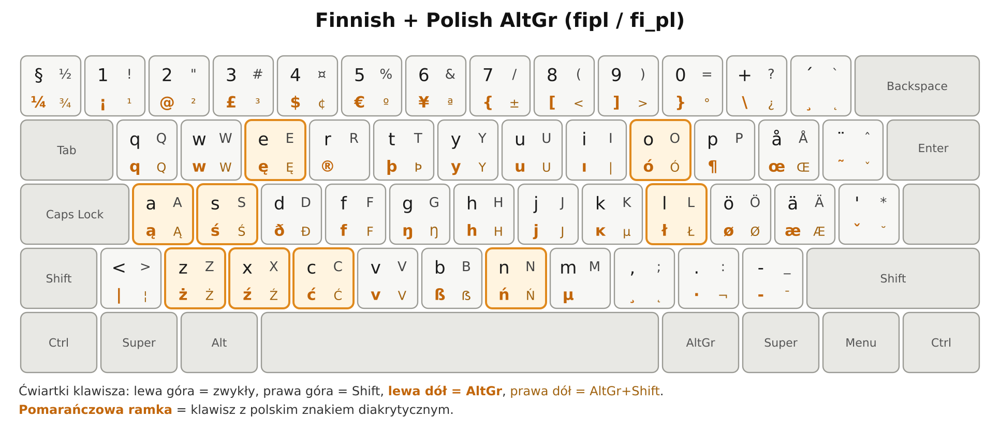

xkb-fi-pl
Polskie znaki na fińskiej klawiaturze w Linuksie.

Polski
Ten układ pozwala pisać polskie znaki (ą ę ł ż…) na fińskiej klawiaturze w Linuksie — to zwykły układ XKB, więc działa jednakowo w Ubuntu, Linux Mint, KDE i GNOME.
Standardowy fiński układ klawiatury, w którym AltGr daje polskie
znaki dokładnie tak samo jak na polskiej klawiaturze (pl).
Fińska podstawa zostaje nietknięta: å, ö,
ä, martwe znaki, wszystko na swoim miejscu. Dochodzi wyłącznie
dziewięć polskich liter na trzecim poziomie.
Nazwa układu: fipl, wariant fi_pl.
| klawisz | AltGr | AltGr+Shift |
|---|---|---|
a | ą | Ą |
c | ć | Ć |
e | ę | Ę |
l | ł | Ł |
n | ń | Ń |
o | ó | Ó |
s | ś | Ś |
x | ź | Ź |
z | ż | Ż |
Instalacja
Pakiet .deb (Debian, Ubuntu) — zalecane:
wget https://github.com/callynsky/xkb-fi-pl/releases/download/v1.1.0/xkb-fi-pl_1.1.0_all.deb
sudo apt install ./xkb-fi-pl_1.1.0_all.debPakiet tylko udostępnia układ. Niczego nie wybiera i nie
zmienia żadnego Twojego ustawienia — nie ma skryptów postinst
ani postrm.
Bez pakietu, z repozytorium:
./install.sh --check # sprawdza kompilację, nic nie instaluje
./install.sh --user # ~/.config/xkb
./install.sh --system # /etc/xkb (działa też na ekranie logowania)
./install.sh --uninstallWybór układu
# sesja graficzna: Ustawienia systemowe → Klawiatura → Układy → Dodaj → „fipl”
sudo localectl set-x11-keymap fipl pc105 fi_pl # konsola i ekran logowaniaCzym różni się od standardowego fińskiego
AltGr+lzajmuje miejscedead_strokezfi(classic). To jedyny znak fińskiego układu, który trzeba było poświęcić, żebyłtrafiło tam, gdzie jest na polskiej klawiaturze.- Kropka na klawiaturze numerycznej zostaje kropką.
fi(classic)to samoinclude "fi(fi)", afi(fi)dołączakpdl(comma), który zamienia ją na przecinek. Ten układ przywraca kropkę przezinclude "kpdl(dot)".
English
This layout lets you type Polish letters on a Finnish keyboard in Linux — it is a plain XKB layout, so it behaves the same on Ubuntu, Linux Mint, KDE and GNOME.
A standard Finnish keyboard layout where AltGr produces the Polish
letters in the same positions as on the Polish (pl) layout.
The Finnish base is untouched — å, ö, ä
and the dead keys all stay where they are. Nine letters are added on the third
level: ą ć ę ł ń ó ś ź ż, capitals on AltGr+Shift. Layout name
fipl, variant fi_pl.
wget https://github.com/callynsky/xkb-fi-pl/releases/download/v1.1.0/xkb-fi-pl_1.1.0_all.deb
sudo apt install ./xkb-fi-pl_1.1.0_all.debOr from a clone: ./install.sh --user (into
~/.config/xkb) or --system (into /etc/xkb,
which also covers the login screen). The package only makes the layout
available; it never selects it and never edits your settings.
AltGr+lreplacesdead_strokefromfi(classic)— the one Finnish character given up so thatłsits where Polish typists expect it.- The keypad decimal key stays a dot.
fi(classic)is justinclude "fi(fi)", andfi(fi)pulls inkpdl(comma), which turns the dot into a comma; this layout restores it withinclude "kpdl(dot)".

Suomeksi
Tämän asettelun avulla kirjoitat puolalaiset kirjaimet suomalaisella näppäimistöllä Linuxissa — se on tavallinen XKB-asettelu, joten se toimii samoin Ubuntussa, Linux Mintissä, KDE:ssä ja GNOMEssa.
Tavallinen suomalainen näppäinasettelu, jossa AltGr tuottaa
puolalaiset kirjaimet samoista näppäimistä kuin puolalaisessa
(pl) asettelussa. Suomalainen perusta on ennallaan —
å, ö, ä ja tarkenäppäimet pysyvät
paikoillaan. Mukaan tulee yhdeksän näppäintä: ą ć ę ł ń ó ś ź ż,
isot kirjaimet AltGr+Shift. Asettelun nimi fipl, muunnos
fi_pl.
wget https://github.com/callynsky/xkb-fi-pl/releases/download/v1.1.0/xkb-fi-pl_1.1.0_all.deb
sudo apt install ./xkb-fi-pl_1.1.0_all.debTai kloonista: ./install.sh --user tai --system.
Paketti ainoastaan tuo asettelun saataville; se ei valitse sitä eikä muuta
asetuksiasi.
AltGr+lkorvaafi(classic)-asettelundead_stroke-merkin.- Numeronäppäimistön desimaalierotin pysyy pisteenä.
fi(classic)on pelkkäinclude "fi(fi)", jafi(fi)tuo mukanaankpdl(comma)-määrittelyn, joka tekee pisteestä pilkun; tämä asettelu palauttaa pisteeninclude "kpdl(dot)"-rivillä.

Repozytorium i dokumentacja
- Repozytorium na GitHubie
- Wydanie 1.1.0
- Windows / macOS — issue #1
- Konsola tekstowa
- Zgłoszenie do upstreamu
Windows i macOS: układ jest zrobiony dla XKB, czyli Linuksa. Odpowiednik dla Windowsa (MSKLC) jeszcze nie istnieje — jeśli chcesz pomóc, zajrzyj do issue #1.